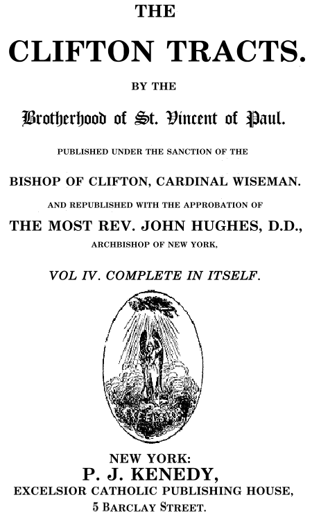

http://www.aloha.net/~mikesch/ |
The following essay asks the Protestant: WHY DON'T YOU KEEP HOLY THE SABBATH-DAY?
The 1852 British tract published in London, appeared in The Clifton Tracts, Volume III, Tracts on Christian Doctrine, Tract #48.
In the 1856 U.S. edition of The Clifton Tracts, this tract on the Sabbath appeared in Volume IV.

WHY DON'T YOU KEEP HOLY
THE SABBATH-DAY?A QUESTION FOR ALL BIBLE CHRISTIANS
[pg. 3]
I am going to propose a very plain and serious question, to which I would entreat all who profess to follow "the Bible and the Bible only" to give their most earnest attention. It is this: Why do you not keep holy the Sabbath-day?
The command of Almighty God stands clearly written in the Bible in these words: "Remember the Sabbath-day, to keep it holy. Six days shalt thou labor, and do all thy work; but the seventh day is the Sabbath of the Lord thy God; in it thou shalt do any work" (Exod. xx. 8,9) And again, "Six days shall work be done; but on the seventh day there shall be to you an holy day, a Sabbath of rest to the Lord; whosoever doeth work therein shall be put to death. Ye shall kindle no fire through out your habitations upon the Sabbath day" (Exod. xxxv. 2, 3). How strict and precise is
[pg. 4]
God's commandment upon this head! No work whatever was to be done on the day which He had chosen to set apart for Himself and to make holy; He required of His people that they should not even light a fire upon that day. And accordingly, when the children of Israel "found a man that gathered sticks upon the Sabbath-day," "the Lord said unto Moses, The man shall be surely put to death; all the congregation shall stone him with stones without the camp" (Numbers xv. 35). Such being God's command then, I ask you again, Why do you not obey it? Why do you not keep holy the Sabbath-day?
You will answer me, perhaps, that you do keep holy the Sabbath day; for that you abstain from all the worldly business and diligently go to church, and say your prayers, and read your Bible at home, every Sunday of your lives.
But Sunday is not the Sabbath-day. Sunday is the first day of the week; the Sabbath-day was the seventh day of the week. Almighty God did not give a commandment that men should keep holy one day in seven; but He named His own day, and said distinctly, "Thou shalt keep holy the seventh day;" and he assigned
[pg. 5]
a reason for choosing this day rather than any other - a reason which belongs only to the seventh day of the week, and cannot be applied to the rest. He says, "For in six days the Lord made the heaven and the earth, the sea and all that in them is, and rested the seventh day; wherefore the Lord blessed the Sabbath-day and hallowed it." Almighty God ordered that all men should rest from their labor on the seventh day, because He too had rested on that day: He did not rest on Sunday, but on Saturday. On Sunday, which is the first day of the week, He began the work of creation. He did not finish it; it was on Saturday that He "ended His work which He had made; and He rested on the seventh day from all His work which He had made; and God blessed the seventh day, and sanctified it, because that in it He had rested from all His work which God created and made" (Gen. ii. 2, 3) Nothing can more plain and easy to understand than all this; and there is nobody who attempts to deny it; it is acknowledged by everybody that the day which Almighty God appointed to be kept holy was Saturday, not Sunday. Why do you then keep holy the Sunday, and not Saturday?
You will tell me that Saturday was the Jewish
[pg. 6]
Sabbath, but that the Christian Sabbath has been changed to Sunday. Changed! but by whom? Who has the authority to change an express commandment of God? When God has spoken and said, Thou shalt keep holy the seventh day, who shall dare to say, Nay, thou mayest work and do all manner of worldly business on the seventh day; but thou shalt keep holy the first day in its stead? This is a most important question, which I know not how you can answer.
You are a Protestant, and you profess to go by the Bible and the Bible only; and yet in so important a matter as the observance of one day in seven as a holy day, you go against the plain letter of the Bible, and put another day in the place of that day which the Bible has commanded. The command to keep holy the seventh day is one of the ten commandments; you believe that the other nine are still binding; who gave you authority to tamper with the fourth? If you are consistent with your own principles, if you really follow the Bible and the Bible only, you ought to be able to produce some portion of the New Testament in which this fourth commandment is expressly altered, or at least from which you may confidently
[pg. 7]
infer that it was the will of God that Christians should make that change in its observance which you have made. Let us see whether any such passages can be found. I will look for them in the writings of your own champions, who have attempted to defend your practice in this matter.
1. The first text which I find quoted upon the subject is this: "Let no man judge you in respect of an holy day, or of the new moon, or of the Sabbath-days" (Col. ii. 16). I could understand a Bible Christian arguing from this passage, that we ought to make no difference between Saturday, Sunday, and every other day of the week; that under the Christian dispensation all such distinctions of days were done away with; one day was as good and as holy as another; there were to be no Sabbaths, no holy days at all. But not one syllable does it say about the obligation of the Sabbath being transferred from one day to another.
2. Secondly, the words of St. John are quoted, "I was in the Spirit on the Lord's day (Apoc. i. 10). Is it possible that anybody can for a moment imagine that here is a safe and clear rule for changing the weekly feast from the seventh to the first day? This
[pg. 8]
passage is utterly silent upon such a subject; it does but give us Scriptural authority for calling some one day in particular (it does not even say which day) "the Lord's day."
3. Next we are reminded that St. Paul bade his Corinthian converts, "upon the first day of the week, lay by them in store, that there might be no gatherings" when he himself came (1 Cor. xvi. 2). How is this supposed to affect the law of the Jewish Sabbath? It commands a certain act of almsgiving to be done on the first day of the week. It says absolutely nothing about not doing certain other acts of prayer and public worship on the seventh day.
4. But it was "on the first day of the week" when the disciples were assembled with closed doors for fear of the Jews, and Jesus stood in the midst of them; and again, it was eight days afterwards (that is, on the first day of the following week) that "the disciples were within, and Thomas with them," and Jesus again came and stood in the midst (John xx. 19, 26): that is to say, it was on the evening of the day of the Resurrection that our Lord first showed Himself to many disciples gathered together; and after eight days He again showed Himself to the same company, with the further addition
[pg. 9]
of St. Thomas. What is there in these facts to do away with the obligation of keeping holy the seventh day? Our Lord rose from dead on the first day of the week, and on the same day at evening He appears to many of His disciples; He appears again on that day [of the] week, and perhaps also on other days in the interval. Let Protestants, if they will, keep holy the first day of the week in grateful commemoration of that stupendous mystery, the Resurrection of Christ, and of the evidence He vouchsafed to give of it to His doubting disciples; but this is no scriptural authority for ceasing to keep holy another day of the week which God had expressly commanded to be kept holy for another and altogether different reason.
5. But lastly, we have the example of the Apostles themselves. "Upon the first day of the week, when the disciples came together to break bread, Paul preached unto them, ready to depart on the morrow; and continued his speech until midnight" (Acts xx. 7). Here we have clear proof that the disciples came together for the celebration of the Holy Eucharist, and that they heard a sermon on a Sunday. But is there any proof that they had not done the
[pg. 10]
same on Saturday also? Is it not expressly written concerning those same early Christians, that they "continued daily with one accord in the temple, breaking bread from house to house?" (Acts ii. 46). And as a matter of fact, do we not know from other sources that, in many parts of the Church, the ancient Christians were in the habit of meeting together for public worship, to receive Holy Communion, and to perform the other offices, on Saturdays just the same as on Sundays? Again, then, I say, let Protestants keep holy, if they will, the first day of the week, in order that they may resemble those Christians who were gathered together on that day in the upper chamber in Troas; but let them remember that this cannot possibly release them from the obligation of keeping holy another day which Almighty God has ordered to be kept holy, because on that day He "rested from all His work".
I do not know of any other passages of holy Scripture which Protestants are in the habit of quoting to defend their practice of keeping holy the first day of the week instead of the seventh; yet surely those which I have quoted are not such as should satisfy any reasonable man, who looks upon the written word of God as they
[pg. 11]
profess to look upon it, namely as the one only appointed means of learning God's will, and who really desires to learn and to obey that will in all things with humbleness and simplicity of heart. It is absolutely impossible that a reasonable and thoughtful person should be satisfied, by the texts that I have quoted, that the almighty God intended the obligation of Saturday under the old law to be transferred to Sunday under the new. And yet Protestants do so transfer it, and never seem to have the slightest misgivings lest, in doing so, they should be guilty of breaking one of God's commandments. Why is this? Because, although they talk so largely about following the Bible and the Bible only, they are really guided in this matter by the voice of tradition. Yes, as much as they may have in fact no other authority to allege for this most important change. The present generation of Protestants keep Sunday holy instead of Saturday, because they received it as part of the Christian religion from the last generation, and that generation received it from the generation before, and so on backwards from one generation to another, by a continual succession, until we come to the time of the
[pg. 12]
(so called) Reformation, when it so happened that those who conducted the change of religion in this country left this particular portion of Catholic faith, and practice untouched.
But, had it happened otherwise, - had some one or other of the "Reformers" taken it into his head to denounce the observance of Sunday as a Popish corruption and superstition, and to insist upon it that Saturday was the day which God had appointed to be kept holy, and that He had never authorized the observance of any other - all Protestants would have been obliged in obedience to their professed principle of following the Bible and the Bible only, either to acknowledge this teaching as true, and to return to the observance of ancient Jewish Sabbath, or else to deny that there is any Sabbath at all. And so, in like manner, any one at the present day who should be set about, honestly and without prejudice, to draw up for himself a form of religious belief and practice our of the written word of God, must needs come to the same conclusion: he must either believe that the Jewish Sabbath is still binding upon men's consciences, because of the Divine command, "Thou shalt keep holy the seventh day;" or he must believe that no Sabbath at
[pg. 13]
all is binding upon them, because of the Apostolic injunction, "Let no man judge you in respect of a festival day, or of the Sabbaths, which are a shadow of things to come, but the body is Christ's." Either one or the other of these conclusions he might honestly come to; but he would know nothing whatever of a Christian Sabbath distinct from the Jewish, celebrated on a different day, and observed in a different manner, simply because Holy Scripture itself nowhere speaks of such a thing.
Now, mind in all this you would greatly misunderstand me if you supposed I was quarreling with you for acting in this matter on the true and right principle, in other words, a Catholic principle, viz., the acceptance, without hesitation, of that which has been handed down to you by an unbroken tradition. I would not tear from you a single one of those shreds and fragments of Divine truth which you have retained. God forbid! They are the most precious things you possess, and by God's blessing may serve as clues to bring you out of that labyrinth of error in which you find yourselves involved, far more by the fault of your forefathers three centuries ago than by your own. What do I quarrel with you for is, not your inconsistency
[pg. 14]
in occasionally acting on a true principle, but your adoption, as a general rule, of a false one. You keep the Sunday, and not the Saturday; and you do so rightly, for this was the practice of all Christians when Protestantism began; but you have abandoned other Catholic observances which were equally universal at that day, preferring the novelties introduced by the men who invented Protestantism, to the unvarying tradition of above 1500 years. We blame you not for making Sunday your weekly holyday instead of Saturday, but for rejecting tradition, which is the only safe and clear rule by which this observance can be justified. In outward act we do the same as yourselves in this matter; we too no longer observe the Jewish Sabbath, but Sunday in its stead; but then there is this important difference between us, that we do not pretend, as you do, to derive our authority for so doing from a book, but we derive it from a living teacher, and that teacher is the Church. Moreover, we believe that not every thing which God would have us to know and to do is written in the Bible, but that is also an unwritten word of God, which we are bound to believe and to obey, just as we believe and obey the Bible itself, according to that saying
[pg. 15]
of the Apostles, "Stand fast and hold the traditions which you have learned, whether by word or by our epistle" (2 Thess. ii 14). We Catholics, then, have precisely the same authority for keeping Sunday holy instead of Saturday as we have for every other article of our creed, namely, the authority of "the Church of the living God, the pillar and ground of truth" (1 Tim. iii 15); whereas you who are Protestants have really no authority for it whatever; for there is no authority for it in the Bible, and you will not allow that there can be authority for it anywhere else. Both you and we do, in fact, follow tradition in this matter; but we follow it, believing it to be a part of God's word, and the Church to be its divinely-appointed guardian and interpreter; you follow it, denouncing it all the time as a fallible and treacherous guide, which often "make the commandment of God of none effect."